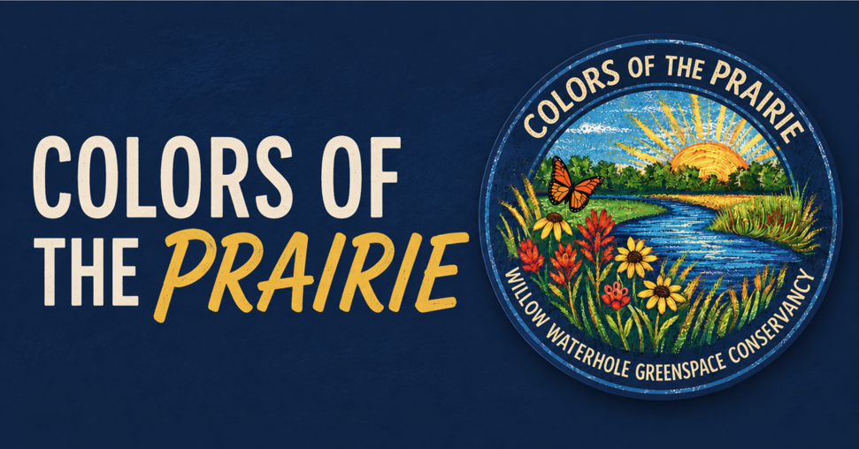

Coming This Fall · November 7
Colors of the Prairie: A New Tradition Begins
This fall, Willow Waterhole hosts the inaugural Colors of the Prairie, a free chalk art festival celebrating the beauty of the Greenway’s native prairies, wetlands, birds, and wildlife. Artists transform the trails into colorful murals while visitors enjoy educational exhibits, native plant giveaways, food vendors, live music, and a Kids’ Chalk Zone.